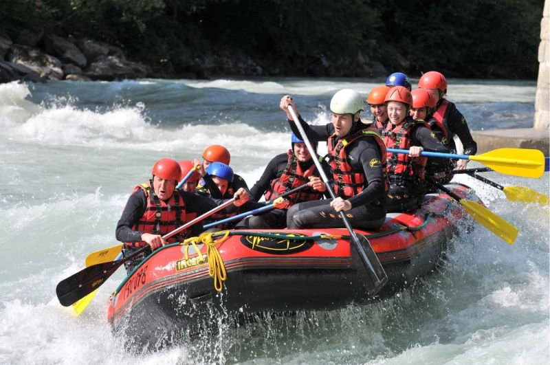

Our company began as a simple passion for rivers, adventure, and the thrill of
navigating untamed waters. What started as small rafting trips with friends
gradually grew into a full-fledged white water rafting venture driven by a
desire to
share authentic river experiences with others. Over the years, we refined our
skills, invested in proper equipment, and trained dedicated guides who share
environmental responsibility, and quality experiences, the company evolved into
a
trusted name for rafting adventures.

As our journeys expanded, so did our community
of adventurers—families, friends, and thrill-seekers looking for something more
than
an ordinary escape. Each season brought new routes, stronger partnerships, and
deeper appreciation for the rivers we explore. Today, our company stands as a
reflection of hard work, passion, and a steadfast commitment to adventure,
continuing to create memorable river experiences while honoring the natural
beauty
that makes white water rafting unforgettable.